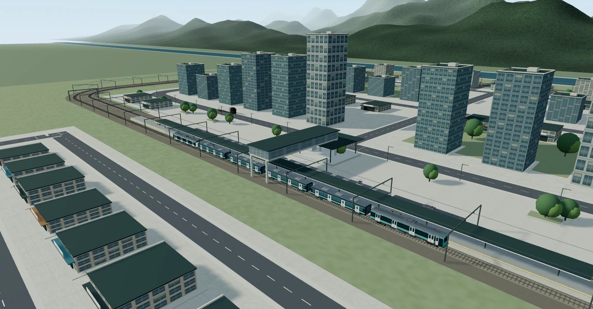

自分だけの電車をつくる
普通の電車も、路面電車も、新幹線も。色・模様・文字を選び、自分で撮った写真でラッピング。完成した電車は保存して呼び出せます。
YOUR TRAIN. YOUR LITTLE TOWN.
好きな色をのせて、名前をつけて。
自分だけの電車で、小さな街へ出発しよう。
登録不要 · ブラウザですぐ遊べます

遊び方は、あなた次第。
普通の電車も、路面電車も、新幹線も。色・模様・文字を選び、自分で撮った写真でラッピング。完成した電車は保存して呼び出せます。
窓の向こうを流れる風景、駅への到着、速度に合わせたガタンゴトン。前から、横から、車窓から。お気に入りの視点を見つけよう。
線路をつなぎ、建物や木を置いて。昼・夕方・夜で変わる景色を楽しんだら、写真や短い動画に残せます。
最初の一歩
街は用意してあります。走る電車を眺めてから、
「電車をつくる」で自分好みの1台を。
音を楽しむには
ゲーム内の「音 OFF」を押すと音が鳴ります。重く感じるときは「軽量表示」をお試しください。
街と電車の保存
保存先は、このブラウザ・この端末です。大切な街はメニューの「街をファイルに保存」で手元にも残せます。
以前のサイトで右上メニュー→「街をファイルに保存」。新しいゲームで「街・線路を読み込む」を選ぶと、街と保存した電車を引き継げます。以前の標準車両は、この世界のオリジナル電車に置き換わります。自作した色や模様は残ります。